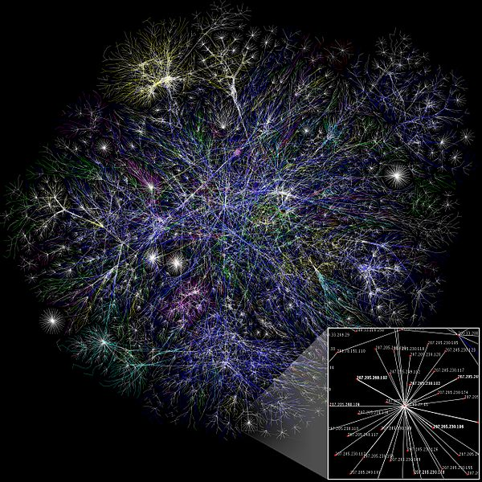
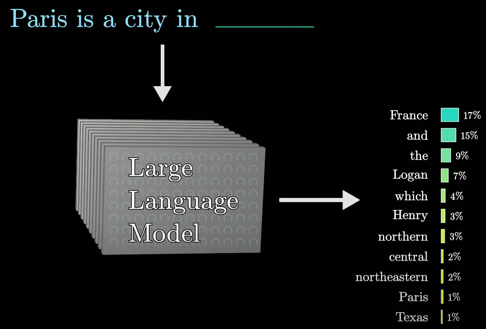
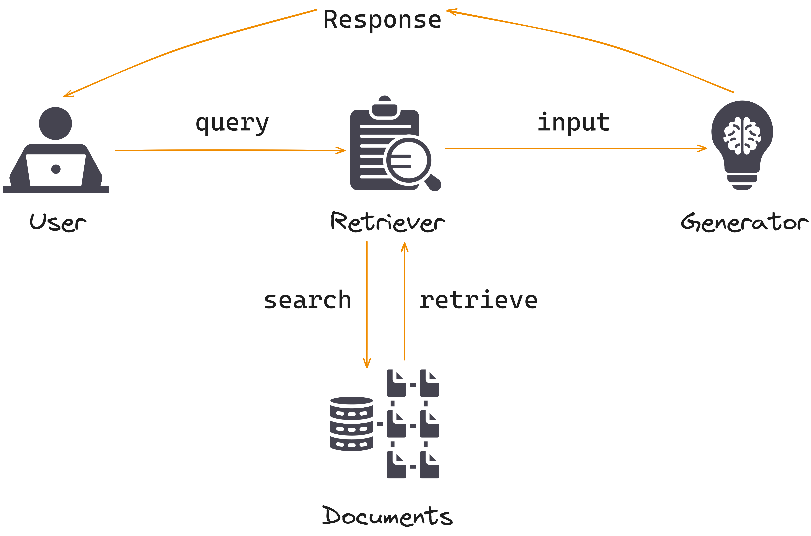
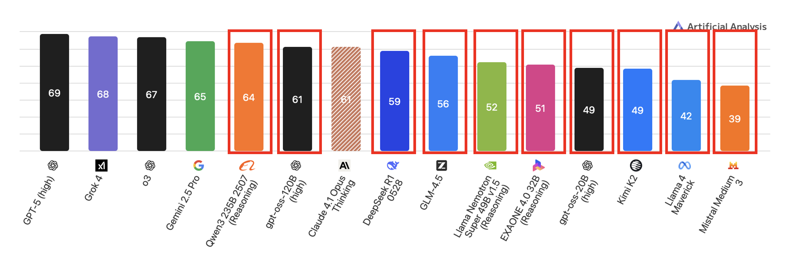
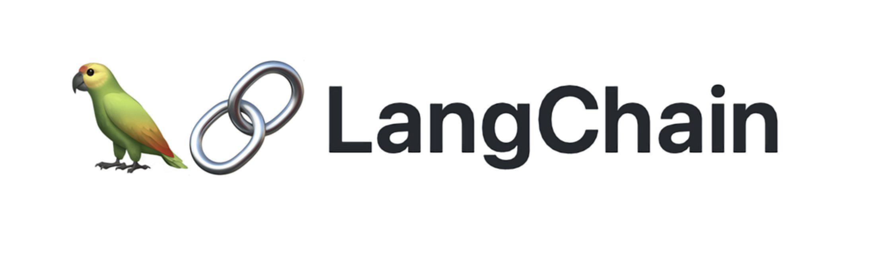
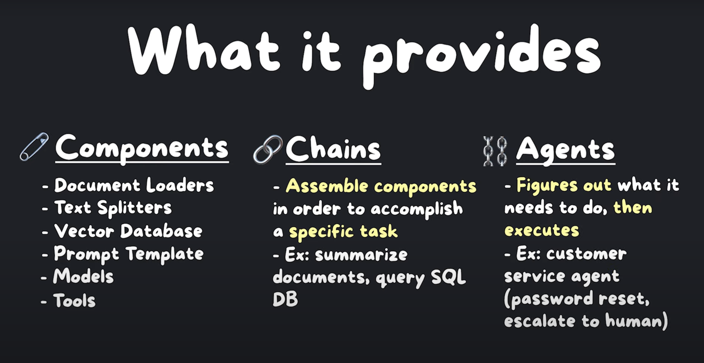
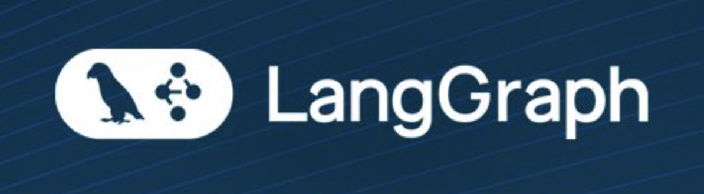
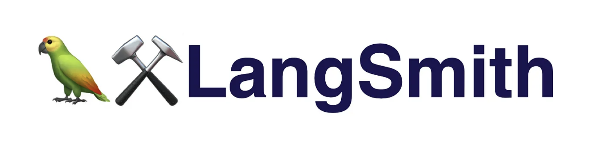
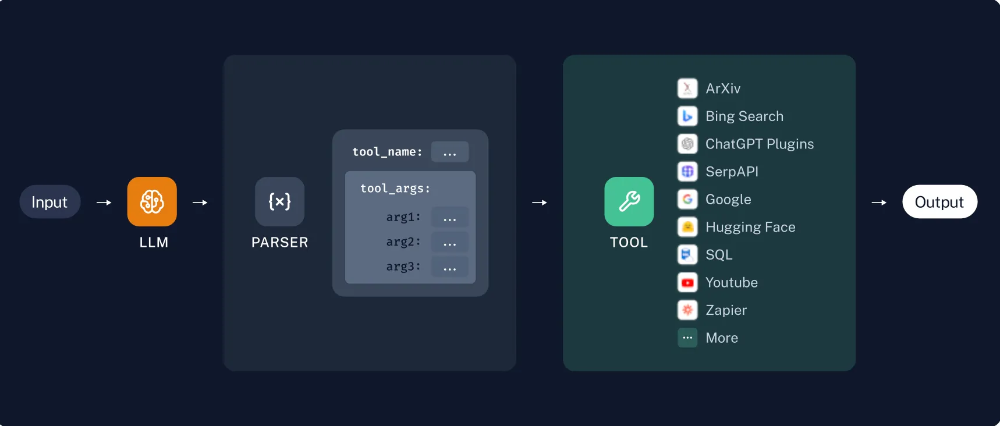
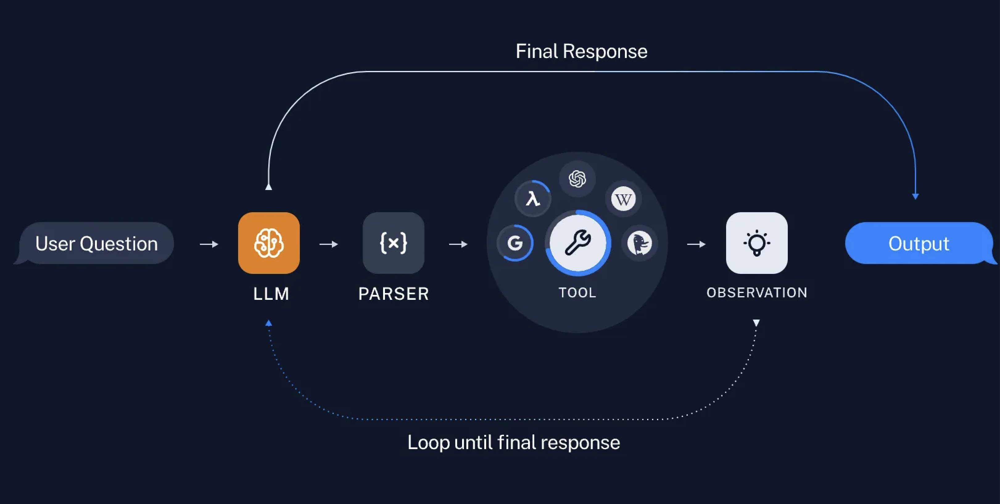

class: title-slide <!-- Changed from "class: center, middle" to "class: title-slide" --> <!-- PRESENTATION TITLE --> #Building Intelligent LLM Workflows Boris Shapkin <!-- Logo in bottom-right --> --- # Large Language Models (LLMs) <b>Large Language Models (LLMs)</b> use vast datasets and deep learning techniques to understand and generate human-like text. They employ neural networks to process and predict language patterns. <div style="display: flex; justify-content: center; align-items: center; gap: 40px; margin-top: 40px; margin-bottom: 20px;"> <div style="display: flex; flex-direction: column; align-items: center;">  <div style="margin-top: 12px; font-size: 0.9em; text-align: center;">chunk of the internet,<br>~10 Tb of text</div> </div> <div style="display: flex; align-items: center;"> <span style="font-size: 3em;">→</span> </div> <div style="display: flex; flex-direction: column; align-items: center;"> <div style="margin-top: 12px; font-size: 0.9em; text-align: center;">6,000 GPUs for 12 days,<br>~$2M ~1e24 FLOPS</div> </div> <div style="display: flex; align-items: center;"> <span style="font-size: 3em;">→</span> </div> <div style="display: flex; flex-direction: column; align-items: center;"> <div style="margin-top: 12px; font-size: 0.9em; text-align: center;">~140GB file</div> </div> </div> <div style="font-size: 0.5em; margin-top: 64px; margin-bottom: 8px;"> *numbers for Llama 2 70B<br> credits <a href="https://karpathy.ai">A. Karpaty</a> </div> --- # How do they work? <div style="display: flex; flex-direction: row; align-items: flex-start; gap: 30px; margin-top: 40px;"> <div style="flex-shrink: 0;">  </div> <!-- <div style="flex: 1; min-width: 450px; font-size: 0.85em;"> <div style="display: flex; flex-direction: row; align-items: flex-start; gap: 12px; margin-top: 24px;"> <div style="flex-shrink: 0;"> </div> --> <div style="flex: 1; min-width: 380px; font-size: 0.75em;"> <b>Stage 1: Pretraining</b><br> <ul style="margin-top: 3px;"> <li>Acquire Data: ~10TB of diverse text.</li> <li>Provision Hardware: ~6,000 GPUs.</li> <li>Model Compression</li> <li>Result: Obtain the base model.</li> </ul> <b>Stage 2: Finetuning</b><br> <ul style="margin-top: 3px;"> <li>Labeling & Data: Define guidelines; gather ~100K Q&A samples or comparisons (e.g., via scale.ai).</li> <li>Refinement: Finetune the base model (~1 day) to form the assistant model.</li> <li>Validation & Deployment: Thoroughly evaluate; move to production.</li> <li>Monitor & Iterate: Track misbehaviors, gather data, and repeat as needed.</li> </ul> </div> </div> --- # Retrieval-augmented generation (RAG) <div style="display: flex; flex-direction: row; align-items: flex-start; gap: 30px; margin-top: 40px; margin-left: 50px;" > <div style="flex-shrink: 0;">  </div> <div style="flex: 1; min-width: 460px; font-size: 1em;"> <!-- <div style="flex: 1; min-width: 320px; font-size: 0.85em;"> --> <ul style="margin-top: 15px;"> <li style="margin-bottom: 50px;">Takes user’s request.</li> <li style="margin-bottom: 50px;">Retrieves information from external sources.</li> <li style="margin-bottom: 50px;">Augments user’s question with additional information.</li> <li style="margin-bottom: 0;">Sends information to LLM (as a very long prompt).</li> </ul> </div> </div> --- # Open Source vs. Paid LLMs <div style="display: flex; justify-content: center; margin-top: 10px;">  </div> --- # Open Source vs. Paid LLMs <div style="display: flex; justify-content: center; margin-top: 80px;"> <table style="width: 95%; max-width: 1400px; border-collapse: collapse; font-size: 0.8em;"> <thead> <tr> <th style="border-bottom: 2px solid #333; padding: 8px; text-align: left;">Aspect</th> <th style="border-bottom: 2px solid #333; padding: 8px; text-align: left;">Open-Source</th> <th style="border-bottom: 2px solid #333; padding: 8px; text-align: left;">Paid LLMs</th> </tr> </thead> <tbody> <tr> <td style="padding: 8px; border-top: 1px solid #ccc;">🔐 Data Privacy & Security</td> <td style="padding: 8px; border-top: 1px solid #ccc;">Full local control; ideal for compliance</td> <td style="padding: 8px; border-top: 1px solid #ccc;">External processing; potential privacy risks</td> </tr> <tr> <td style="padding: 8px; border-top: 1px solid #ccc;">⚙️ Customization</td> <td style="padding: 8px; border-top: 1px solid #ccc;">Full access to weights & code; deep fine-tuning</td> <td style="padding: 8px; border-top: 1px solid #ccc;">API-driven only; limited to prompt-level tuning</td> </tr> <tr> <td style="padding: 8px; border-top: 1px solid #ccc;">💰 Cost</td> <td style="padding: 8px; border-top: 1px solid #ccc;">No license fees; infra & expertise costs apply</td> <td style="padding: 8px; border-top: 1px solid #ccc;">Low setup; per-token/subscription fees at scale</td> </tr> </tbody> </table> </div> <div style="font-size: 0.5em; margin-top: 64px; margin-bottom: 8px;"> *Large models require high-end enterprise GPUs (≥80 GB VRAM) and large system memory (≥64 GB RAM), making them impractical to run on typical local machines.<br> </div> --- # Quantized Models: Your Local-Friendly Solution 🚀 ## What Is Quantization? - **Definition**: Compression that reduces model precision from high-precision formats (like FP32/FP16) to lower-precision integers (INT8, INT4, INT2, etc.) — shrinking size and boosting speed. - **Why it matters**: - Cuts model size by up to ~75–90% - Enables faster inference and lower energy usage - Makes deployment feasible on consumer CPUs/GPUs --- #Practical Quantized Models for Local Use <div style="display: flex; justify-content: center; margin-top: 40px;"> <table style="width: 95%; max-width: 1200px; border-collapse: collapse; font-size: 0.9em;"> <thead> <tr> <th style="border-bottom: 2px solid #333; padding: 8px; text-align: left;">Model</th> <th style="border-bottom: 2px solid #333; padding: 8px; text-align: left;">Params</th> <th style="border-bottom: 2px solid #333; padding: 8px; text-align: left;">Quantized Size</th> <th style="border-bottom: 2px solid #333; padding: 8px; text-align: left;">RAM ≥</th> <th style="border-bottom: 2px solid #333; padding: 8px; text-align: left;">VRAM ≥</th> </tr> </thead> <tbody> <tr> <td style="padding: 6px; border-top: 1px solid #ccc;">Gemma 3 (4B)</td> <td style="padding: 6px; border-top: 1px solid #ccc;">4 B</td> <td style="padding: 6px; border-top: 1px solid #ccc;">~3-4 GB</td> <td style="padding: 6px; border-top: 1px solid #ccc;">16 GB</td> <td style="padding: 6px; border-top: 1px solid #ccc;">~6 GB</td> </tr> <tr> <td style="padding: 6px; border-top: 1px solid #ccc;">Mistral 7B</td> <td style="padding: 6px; border-top: 1px solid #ccc;">7 B</td> <td style="padding: 6px; border-top: 1px solid #ccc;">~4 GB</td> <td style="padding: 6px; border-top: 1px solid #ccc;">16 GB</td> <td style="padding: 6px; border-top: 1px solid #ccc;">~6 GB</td> </tr> <tr> <td style="padding: 6px; border-top: 1px solid #ccc;">Llama 3.1 (8B)</td> <td style="padding: 6px; border-top: 1px solid #ccc;">8 B</td> <td style="padding: 6px; border-top: 1px solid #ccc;">~5 GB</td> <td style="padding: 6px; border-top: 1px solid #ccc;">16 GB</td> <td style="padding: 6px; border-top: 1px solid #ccc;">~8 GB</td> </tr> <tr> <td style="padding: 6px; border-top: 1px solid #ccc;">DeepSeek‑R1 (1.5B)</td> <td style="padding: 6px; border-top: 1px solid #ccc;">1.5 B</td> <td style="padding: 6px; border-top: 1px solid #ccc;">~1 GB</td> <td style="padding: 6px; border-top: 1px solid #ccc;">12 GB</td> <td style="padding: 6px; border-top: 1px solid #ccc;">~4 GB</td> </tr> <tr> <td style="padding: 6px; border-top: 1px solid #ccc;">DeepSeek‑R1 (7B)</td> <td style="padding: 6px; border-top: 1px solid #ccc;">7 B</td> <td style="padding: 6px; border-top: 1px solid #ccc;">~4-5 GB</td> <td style="padding: 6px; border-top: 1px solid #ccc;">16 GB</td> <td style="padding: 6px; border-top: 1px solid #ccc;">~4–6 GB</td> </tr> <tr> <td style="padding: 6px; border-top: 1px solid #ccc;">Gemma 3n (E2B)</td> <td style="padding: 6px; border-top: 1px solid #ccc;">∼5 B raw → 2 B eff.</td> <td style="padding: 6px; border-top: 1px solid #ccc;">~5 GB</td> <td style="padding: 6px; border-top: 1px solid #ccc;">2 GB</td> <td style="padding: 6px; border-top: 1px solid #ccc;">~2 GB</td> </tr> <tr> <td style="padding: 6px; border-top: 1px solid #ccc;">Gemma 3n (E4B)</td> <td style="padding: 6px; border-top: 1px solid #ccc;">∼8 B raw → 4 B eff.</td> <td style="padding: 6px; border-top: 1px solid #ccc;">~8 GB</td> <td style="padding: 6px; border-top: 1px solid #ccc;">3 GB</td> <td style="padding: 6px; border-top: 1px solid #ccc;">~3 GB</td> </tr> </tbody> </table> </div> *Note: VRAM includes ~20% overhead for context, activations & KV cache.* <br> Find open-source LLMs at <a href="https://ollama.com/search" target="_blank">Ollama</a>. --- # LLMs in Python <div style="display: flex; justify-content: space-evenly; align-items: flex-start; gap: 32px; margin-top: 30px; width: 92vw;"> <!-- LangChain --> <div style="flex: 1; min-width: 320px; text-align: center;">  <div style="font-size: 0.8em; margin-bottom: 15px;"> <a href="https://www.langchain.com">A Python framework for composing LLM calls into modular “chains” and autonomous agents.</a> </div> <ul style="text-align: left; margin: 0 0 0 18px; font-size: 0.92em;"> <li>Connects prompts, logic, and data sources</li> <li>Ships with ready-made building blocks (LLMs, retrievers, memory, agents)</li> </ul> </div> <!-- Custom image --> <div style="flex: 1; min-width: 320px; text-align: center;"> <!-- Replace the src value with your image path -->  </div> </div> --- # LLMs in Python <div style="display: flex; justify-content: space-evenly; align-items: flex-start; gap: 64px; margin-top: 30px; width: 92vw; max-width: none;"> <!-- LangGraph (repeated for context) --> <div style="flex: 1; min-width: 320px; text-align: center;">  <div style="font-size: 0.8em; margin-bottom: 45px;"> <a href="https://www.langchain.com/langgraph">A graph-based toolkit to visualize, debug, and optimize your LLM workflows.</a> </div> <ul style="text-align: left; margin: 0 0 0 18px; font-size: 0.92em;"> <li>Represents chains and tool calls as nodes & edges</li> <li>Lets you inspect intermediate steps, data flows, and dependencies</li> <li>Integrates with LangChain under the hood</li> </ul> </div> <!-- LangSmith --> <div style="flex: 1; min-width: 320px; text-align: center;">  <div style="font-size: 0.8em; margin-bottom: 45px;"> <a href="https://www.langchain.com/langsmith">An observability & debugging platform for LangChain applications.</a> </div> <ul style="text-align: left; margin: 0 0 0 18px; font-size: 0.92em;"> <li>Traces every prompt, call, and token</li> <li style="margin-bottom: 45px;">Visualizes execution graphs and timings</li> <li>Helps you iterate faster by surfacing errors and performance bottlenecks</li> </ul> </div> </div> --- # Integrating tools and agents <div style="display: flex; flex-direction: row; align-items: flex-start; gap: 36px; margin-top: 40px;"> <div style="flex-shrink: 0;">  </div> <div style="flex: 1; min-width: 400px; font-size: 1em;"> <ul style="margin-top: 60px;"> <li style="margin-bottom: 36px;">Enhance LLM with external capabilities.</li> <li style="margin-bottom: 36px;">Incorporate JSON, XML, or function calls.</li> <li style="margin-bottom: 36px;">Improve searching or database queries.</li> <li style="margin-bottom: 0;">Simplify structured data extraction.</li> </ul> </div> </div> --- # Integrating tools and agents <div style="display: flex; flex-direction: row; align-items: flex-start; gap: 36px; margin-top: 40px;"> <div style="flex-shrink: 0;">  </div> <div style="flex: 1; min-width: 400px; font-size: 1em;"> <ul style="margin-top: 60px;"> <li style="margin-bottom: 36px;">Allow flexible, iterative tool usage.</li> <li style="margin-bottom: 36px;">Model decides tools on the fly.</li> <li style="margin-bottom: 36px;">Supports looping for complex tasks.</li> <li style="margin-bottom: 0;">Confidently handles multiple steps dynamically.</li> </ul> </div> </div> --- # 🔧 The `python_repl` Tool <div style="display: flex; flex-direction: row; align-items: flex-start; gap: 40px; margin-top: 30px;"> <div style="flex: 1; min-width: 320px; font-size: 0.95em;"> <div style="font-size: 1.1em; font-weight: bold; margin-bottom: 10px;">What is it?</div> <div style="margin-bottom: 14px;"> An embedded Python interpreter the LLM can call at runtime to: </div> <ul style="margin-bottom: 18px;"> <li style="margin-bottom: 36px;">Run arbitrary code</li> <li style="margin-bottom: 36px;">Inspect & transform data</li> <li>Return results back into the agent pipeline</li> </ul> </div> <div style="flex: 1.2; min-width: 320px;"> <div style="font-size: 1.1em; font-weight: bold; margin-bottom: 10px;">How the LLM invokes i:</div> <pre style="background: #222; color: #fff; font-size: 0.95em; padding: 10px; border-radius: 8px; overflow-x: auto; max-width: 100%; box-shadow: 0 2px 6px rgba(0,0,0,0.3);"> JSON tool call example <code> { "tool_name": "python_repl", "tool_args": {"code": "import math result = math.sqrt(42) print('√42 =', result)"} } </code> </pre> </div> </div> --- # CMIP6 GPT <div style="position: relative; width: 100%; height: 100vh; overflow: hidden;"> <iframe src="https://www.youtube.com/embed/jrh_PGtQ8PI?controls=0&modestbranding=1&rel=0" title="CMIP6 GPT Demo" frameborder="0" allow="autoplay; encrypted-media" allowfullscreen style="position: absolute; top: 0; left: 0; width: 100%; height: 100%;" ></iframe> </div> <p style="text-align: center; margin-top: 20px; font-size: 0.9em;"> <a href="https://github.com/CliDyn/cmip6_gpt" target="_blank">CMIP6 GPT</a> is an AI-powered assistant designed to help users access CMIP6 climate data through natural language conversations. </p> --- # Recommendations - [Andrej Karpathy YouTube channel](https://www.youtube.com/@AndrejKarpathy/videos) To learn more about foundational LLM concepts and demos. - [AWI Climate Dynamics GitHub repo](https://github.com/CliDyn) Explore additional LLM-powered applications in climate science.